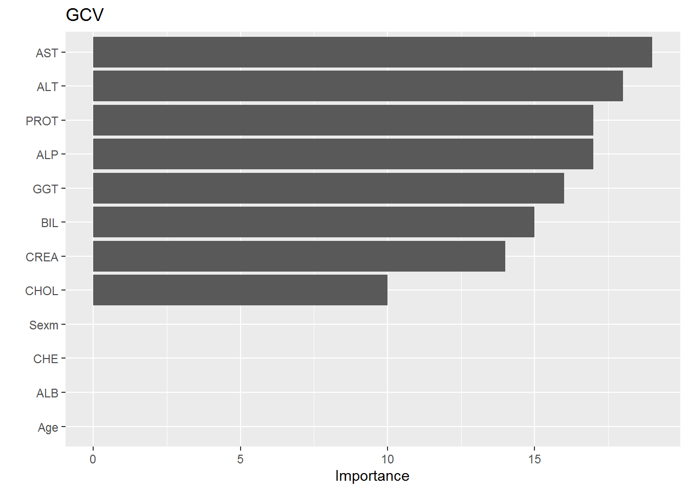

6 V-FOLDS FOR MULTIVARIATE ADAPTIVE REGRESSION SPLINES
library(earth)
library(caret)
library(vip)
library(pdp)
library(pROC)data<-read.csv("data/CleanedData.csv",header = T,colClasses=c("NULL", rep(NA, 13)))
set.seed(10)
V <- 5
n <- NROW(data); n0 <- sum(data$Category==0); n1 <- n-n0;
missclass.rate = c()
err_vec1=c()
for (v in 1:V) {
err_vec1=c(err_vec1, v)
missclass.rate=c(missclass.rate, v)
}
id.fold <- 1:n
id.fold[data$Category==0] <- sample(x=1:V, size=n0, replace=TRUE)
id.fold[data$Category==1] <- sample(x=1:V, size=n1, replace=TRUE)
for (v in 1:V) {
train.v <- data[id.fold!=v, ]; test.v <- data[id.fold==v, ];
fit.mars = earth(factor(Category) ~ ., data = train.v, degree=3,
glm = list(family=binomial(link = "logit")))
#print(fit.mars)
#summary(fit.mars) %>% .$coefficients %>% head(10)
yobs = test.v$Category
pred.mars = predict(fit.mars, newdata=test.v[, -1], type="response")
mod = auc(yobs, pred.mars)
err_vec1[v] = mod
print(paste("AUC for fold", v, ":", err_vec1[v]))
pred.rate = ifelse(pred.mars > 0.5, 1, 0)
miss.rate <- mean(yobs != pred.rate)
missclass.rate[v] = miss.rate
print(paste("Missclassification rate for fold", v,
":",missclass.rate[v]))
}## [1] "AUC for fold 1 : 0.863761467889908"
## [1] "Missclassification rate for fold 1 : 0.0504201680672269"
## [1] "AUC for fold 2 : 0.790094339622642"
## [1] "Missclassification rate for fold 2 : 0.0573770491803279"
## [1] "AUC for fold 3 : 0.959285714285714"
## [1] "Missclassification rate for fold 3 : 0.0175438596491228"
## [1] "AUC for fold 4 : 0.989719626168224"
## [1] "Missclassification rate for fold 4 : 0.0245901639344262"
## [1] "AUC for fold 5 : 0.820762711864407"
## [1] "Missclassification rate for fold 5 : 0.0579710144927536"Average.AUC.mars<-print(paste("Average of AUC:", mean(err_vec1)))## [1] "Average of AUC: 0.884724771966179"Average.Misclass.mars<-print(paste("Average of Miss:", mean(missclass.rate)))## [1] "Average of Miss: 0.0415804510647715"AUC.mars<-mean(err_vec1)
Miss.rate.mars<- mean(missclass.rate)Average.AUC.mars<-print(paste("Average of AUC is", mean(err_vec1)))## [1] "Average of AUC is 0.884724771966179"Average.Misclas.mars<-print(paste("Average of Missclassification is ", mean(missclass.rate)))## [1] "Average of Missclassification is 0.0415804510647715"comment We can observe that,the average AUC is approcximately 0.02 with misclassification rate of 0.05.AU of 0.92 show that the model is good in classification.
summary(fit.mars)## Call: earth(formula=factor(Category)~., data=train.v,
## glm=list(family=binomial(link="logit")), degree=3)
##
## GLM coefficients
## 1
## (Intercept) 2.029917e+15
## h(44.9-ALP) -4.185656e+13
## h(16.6-ALT) 2.781687e+13
## h(ALT-16.6) -3.908952e+13
## h(ALT-54.1) 4.895932e+13
## h(80-AST) -5.687020e+13
## h(AST-80) 1.318185e+13
## h(CREA-98) 2.130403e+12
## h(28.5-GGT) -9.400458e+13
## h(GGT-28.5) 2.578248e+12
## h(44.9-ALP) * h(PROT-69.6) 4.012607e+13
## h(ALT-16.6) * h(44.4-AST) 1.357544e+11
## h(ALT-16.6) * h(BIL-14) -1.516948e+12
## h(ALT-16.6) * h(14-BIL) -1.374636e+12
## h(ALT-16.6) * h(CHOL-4.63) -3.608270e+12
## h(ALT-16.6) * h(4.63-CHOL) 1.778762e+13
## h(24.7-AST) * h(28.5-GGT) 1.383843e+13
## h(AST-24.7) * h(28.5-GGT) -2.855640e+12
## h(ALT-16.6) * h(14-BIL) * h(GGT-26.2) -4.544682e+09
## h(ALT-16.6) * h(14-BIL) * h(26.2-GGT) 1.146505e+12
##
## GLM (family binomial, link logit):
## nulldev df dev df devratio AIC iters converged
## 341.02 476 432.524 457 0 472.5 14 1
##
## Earth selected 20 of 24 terms, and 8 of 12 predictors
## Termination condition: Reached nk 25
## Importance: AST, ALT, ALP, PROT, GGT, BIL, CREA, CHOL, Age-unused, ...
## Number of terms at each degree of interaction: 1 9 8 2
## Earth GCV 0.01654955 RSS 6.37044 GRSq 0.8384433 RSq 0.869078vip(fit.mars, num_features = 24) + ggtitle("GCV") comment
From the variable importance plot we can see that,AST,ALT,PROT in descending order are important variables by MARS.